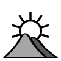
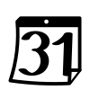

fakindeksoj
agrokulturoarkeologio
 arkitekturo
arkitekturoastronomio
aŭtomobiloj
aviado
bakteriologio, virusologio
belartoj
 beletro
beletrobiblio
biologio, biontologio
botaniko
budhismo
 ekologio
ekologio ekonomiko, financo, komerco
ekonomiko, financo, komercoelektro
elektrotekniko
esperantismo
fervojoj
filozofio
 fiziko
fizikofiziologio
 fonetiko
fonetikofotografio, optiko
genealogio
 geodezio, topografio
geodezio, topografio geografio
geologio
gramatiko
heraldiko
hinduismo
historio
homa anatomio, histologio
hortikulturo, arbokulturo, silvikulturo
islamo
juro
 kalendaro, tempomezurado
katolikismo
 kemio, biokemio
kemio, biokemiokinoarto
kirurgio
komputiko
konstrutekniko
kristanismo
 kuirarto
kuirartolingvistiko, filologio
maraferoj
maŝinoj, mekaniko
 matematiko
matematikomaterialismo historia
medicino, farmacio
meteologio
militaferoj
mineralogio
mitologio
 muziko
muzikonomoj
paleontologio
pedagogio
personoj
poetiko, poezio
 politiko, sociologio, administrado
politiko, sociologio, administradopoŝto
prahistorio
presarto, libroj
psikologio, psikiatrio
radiofonio
religioj
retoj, Interreto
sciencoj
ŝipkonstruado, navigado
sporto, ludoj
teatro
 teknikoj
teknikojteksindustrio, vestoj
telekomunikoj
trafiko
zoologio